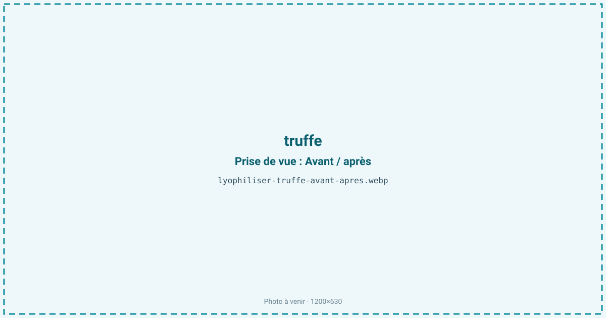
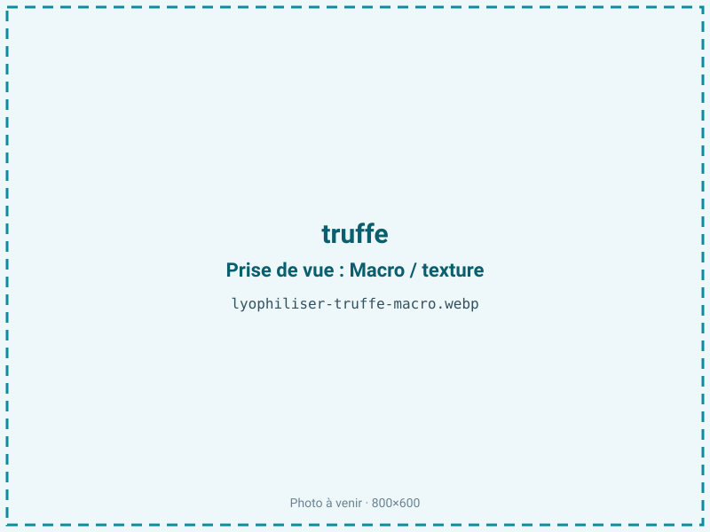
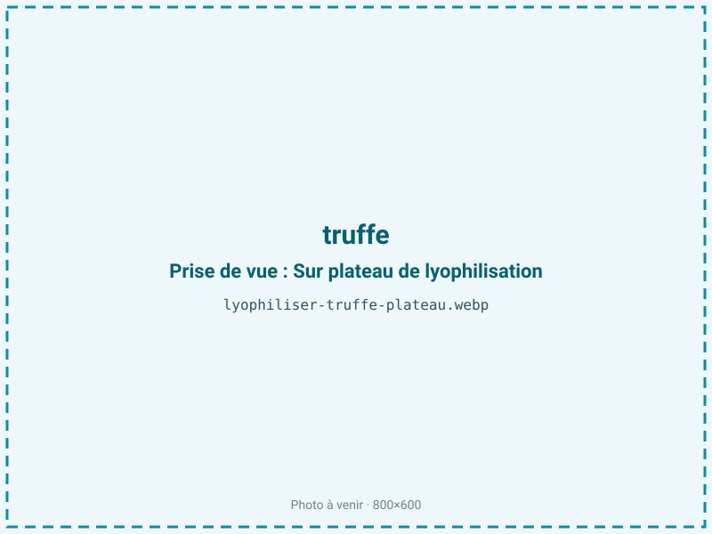
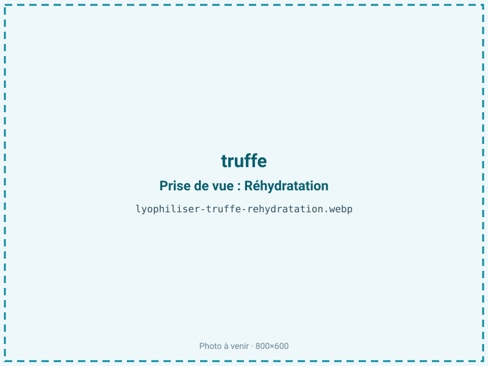

Lyophiliser de la truffe
La truffe fraîche perd son parfum en quelques jours, même au réfrigérateur : ses molécules aromatiques sont parmi les plus volatiles du monde alimentaire. La lyophilisation fixe une partie de ces arômes dans une poudre stable, exploitable toute l'année, là où aucun séchage à chaud ne laisserait qu'un copeau inodore.

En bref
Comment truffe se comporte à la lyophilisation
La truffe titre environ 72 % d'eau, une teneur basse pour un champignon, ce qui explique son ratio de 4:1 favorable. Son corps (l'ascocarpe) présente une gleba marbrée de veines claires et sombres, dense et ferme. Toute sa valeur tient à des composés soufrés extrêmement volatils — le sulfure de diméthyle en tête pour la truffe noire, accompagné d'aldéhydes et d'alcools — qui s'évaporent en continu, d'où la perte de parfum rapide du produit frais.
C'est là toute la difficulté du procédé : pendant la sublimation, ces molécules migrent avec la vapeur d'eau et risquent de partir au piège froid. La congélation doit être rapide pour fixer la matrice, et le cycle mené de façon à limiter l'entraînement des arômes. La truffe contenant une fraction lipidique modérée, ces mêmes composés soufrés y sont en partie retenus. Après séchage, la gleba devient cassante et se prête au broyage en poudre fine, forme sous laquelle la truffe se conserve et se dose le mieux.
Paramètres de cycle
Brosser la truffe pour retirer la terre sans la laver longuement à l'eau, qui diluerait l'arôme. La trancher finement (2 à 4 mm) ou la râper : plus la surface est ouverte, plus le séchage est rapide, mais plus le risque de fuite aromatique augmente — c'est un arbitrage propre à la truffe. Congeler vite à −35 °C pour fixer la matrice et les composés volatils.
En sublimation, garder une clayette modérée (20 à 25 °C) et soigner le piège froid, qui capte une partie des arômes entraînés. L'aw cible est de 0,20 à 0,35 : on reste dans le bas de la fourchette car la truffe est un produit maigre à modérément gras, mais on ne cherche pas la sécheresse extrême, qui n'apporte rien et exposerait davantage sa fraction lipidique. Le critère d'arrêt vise une gleba cassante et une aw stabilisée dans cette plage.
Pièges connus
- Arômes extrêmement volatils : cycle et conditionnement soignés.
- Produit à forte valeur : traçabilité renforcée.



Variantes & provenance
L'espèce change tout : la truffe noire du Périgord (Tuber melanosporum) et la truffe blanche d'Alba (Tuber magnatum) n'ont ni le même profil ni la même tenue, et la truffe d'été (aestivum), moins parfumée, donne un produit plus discret. La maturité est décisive : une truffe pleinement mûre, à la gleba bien marbrée, concentre les arômes ; une truffe immature reste fade après séchage. La provenance et la fraîcheur au moment du traitement pèsent lourd, car chaque jour passé fait perdre du parfum avant même la lyophilisation. Selon l'usage, on traite en fines lamelles (visuel, mouillettes) ou en poudre (assaisonnement, sel truffé), cette dernière forme étant la plus stable dans le temps.
Conservation & DLUO
Pour la truffe, deux facteurs limitants coexistent : la perte des arômes soufrés volatils, principale menace, et l'oxydation de sa fraction lipidique. La truffe étant classée dans les produits modérément gras, l'optimum de stabilité oxydative de ses lipides se situe entre aw 0,30 et 0,50 : en dessous de 0,30, on retire la monocouche d'eau qui protège les graisses et l'on accélère leur rancissement. C'est pourquoi la fourchette visée (0,20-0,35) est ancrée dans sa partie haute, sans sur-séchage.
Le conditionnement doit être hermétique et opaque, idéalement sous azote, pour bloquer à la fois la fuite aromatique et l'oxydation. Comptez 12 à 18 mois en barrière hermétique, moins qu'un champignon maigre car l'arôme s'estompe progressivement même bien conditionné. Un stockage au frais ralentit la perte de parfum et l'oxydation.
12 à 18 mois en barrière hermétique.
Estimez selon votre emballage :
Face aux autres procédés de séchage
La truffe est le cas d'école où le séchage à chaud n'a aucun sens : à l'air chaud comme au four, les composés soufrés — le sulfure de diméthyle en premier — s'évaporent instantanément et il ne reste qu'un copeau brun sans intérêt. Le micro-ondes sous vide, plus doux, emporte tout de même une part importante de ces volatils sous l'effet du front chaud. La lyophilisation est la seule voie qui en retient une fraction exploitable, en travaillant à froid et sous vide. Elle ne restitue pas l'intensité de la truffe fraîche coupée à la minute — rien ne le fait — mais elle offre un ingrédient stable, dosable et disponible hors saison, ce qui n'existe autrement que via des arômes de synthèse.
Marchés & applications
La poudre de truffe sert d'assaisonnement gastronomique, entre dans la composition de sels truffés, de beurres, de sauces et de préparations de traiteur. Les lamelles lyophilisées habillent des plats premium et des coffrets cadeaux. Vu la valeur de la matière, les clients types sont les épiceries fines, les traiteurs et restaurateurs gastronomiques, les fabricants de produits truffés authentiques cherchant une alternative aux arômes artificiels, et les trufficulteurs qui veulent valoriser des lots hors calibre ou des invendus sans les brader. L'authenticité de l'espèce est un argument commercial majeur sur ce marché.
- Poudre de truffe
- Assaisonnement gastronomique
Questions fréquentes — truffe
La truffe lyophilisée garde-t-elle son parfum ?
En partie : le procédé à froid en retient bien plus que n'importe quel séchage à chaud, mais aucune méthode n'égale la truffe fraîche râpée à la minute. La poudre reste toutefois nettement parfumée et dosable.
Pourquoi ne peut-on pas sécher la truffe au four ?
Parce que ses arômes, dominés par le sulfure de diméthyle, sont extrêmement volatils et s'évaporent à la chaleur. Il ne resterait qu'un copeau brun sans odeur.
Truffe noire ou truffe blanche ?
Les deux se lyophilisent, mais la blanche d'Alba, encore plus volatile et fragile, est la plus délicate à stabiliser. La noire du Périgord donne des résultats plus réguliers.
Quel est le ratio de la truffe lyophilisée ?
Environ 4:1 : la truffe est peu aqueuse pour un champignon (72 % d'eau), il faut donc environ 400 g de truffe fraîche pour 100 g de poudre.
Vaut-il mieux la traiter en lamelles ou en poudre ?
La poudre est la forme la plus stable et la plus facile à doser dans le temps ; les lamelles offrent un meilleur visuel mais un arôme qui s'estompe plus vite.
Combien de temps se conserve-t-elle ?
12 à 18 mois en barrière hermétique opaque, idéalement sous azote et au frais. Même bien conditionné, le parfum s'atténue lentement, c'est propre à la truffe.
Faut-il laver la truffe avant traitement ?
Un simple brossage suffit et vaut mieux qu'un lavage prolongé, qui dilue l'arôme et rallonge le cycle en ajoutant de l'eau.
Prochaine étape : envoyez-nous 200 g
Vous avez les repères de la truffe. La suite logique : nous envoyer un échantillon et repartir avec une fiche technique sur votre produit — rendement, aw finale, coût au kilo.
Tester la truffe — 250 à 500 €Déductible de votre premier lot.